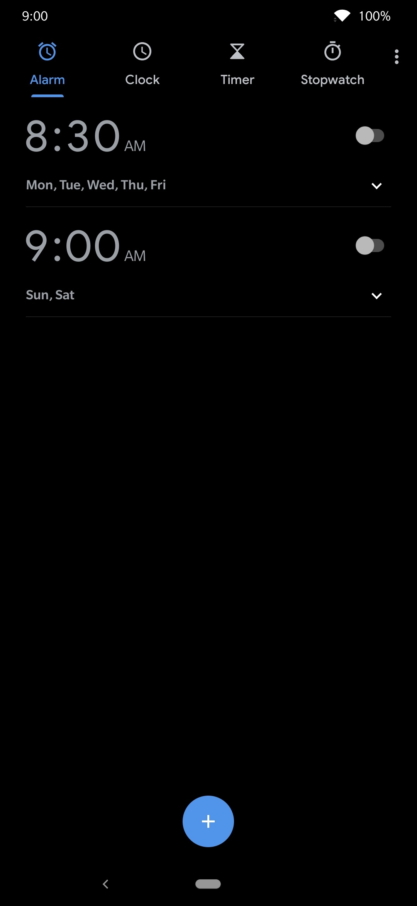
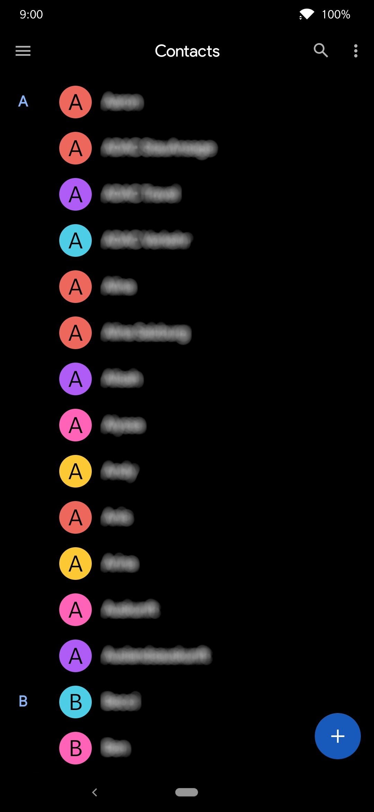
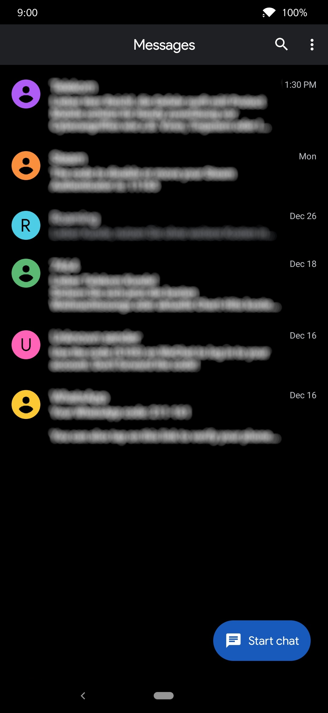
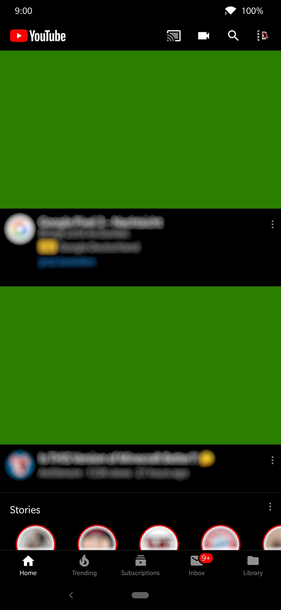
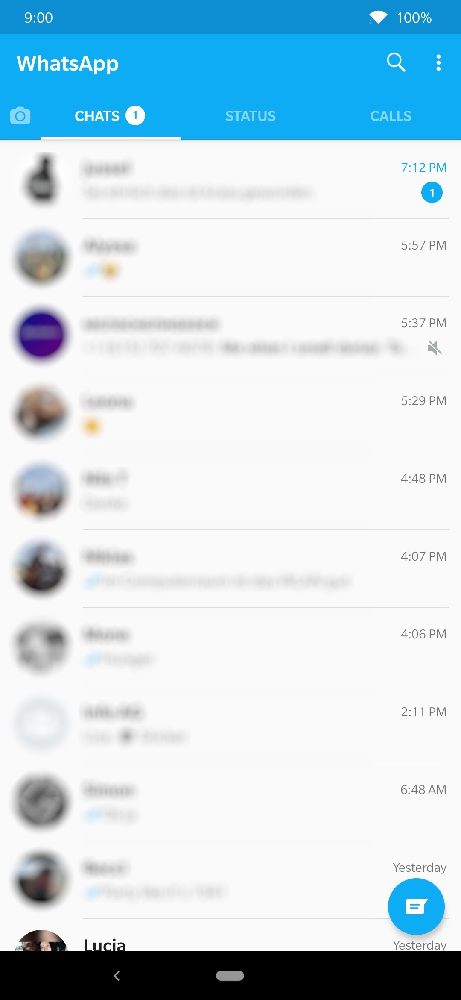
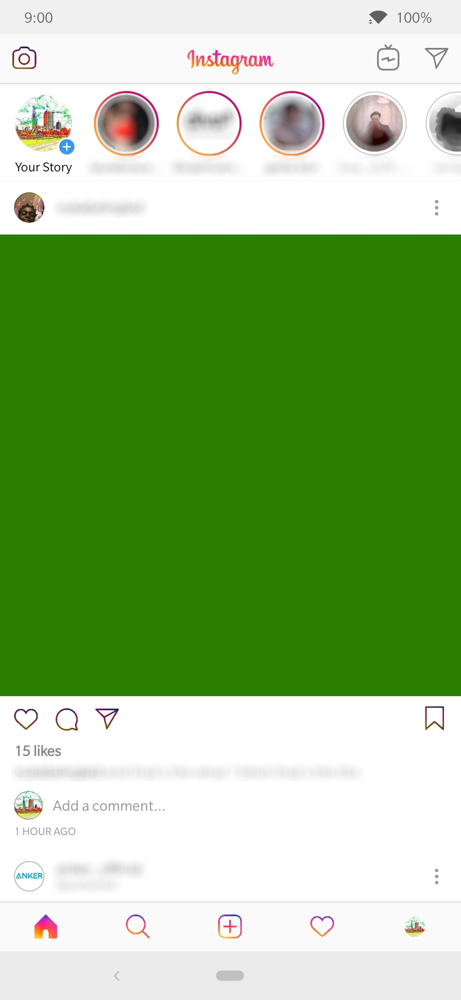

Domi's Substratum Theme is an open source project. The theme includes some nice and colorful overlays for some popular apps as well as better dark modes and other neat things. Download Repository Substratum Android Studio
     